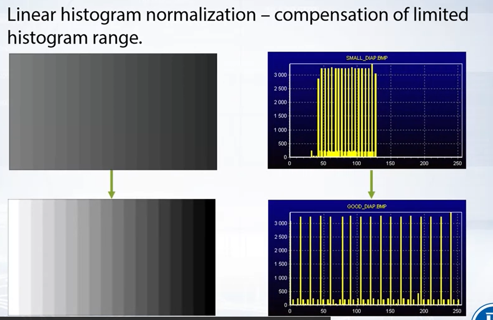

Introduction
Introduction to Computer Vision
We can use OpenCV for a lot of task for example:
Some Specific libraries like: Pytorch, tensorflow, Caffe, Point cloud library, Tesseract, OpenNI, etc.
We have several modules in OpenCV like core, imgproc, imgcoders, videio, highgui, video, calib3d, features2d, objdetect, dnn, ml, flann , photo, stitching.
Introduction and digital images
Color Models
What is color? Color is a psychological property of our visual experiences when we look at objects and lights. Is the result
of interaction between physical light in the environment and our visual system.
Digital Images are taken using a special technique called Bayer pattern, with this patter we only obtain information for each
pixel and then we stimate missed color values
Digital color images is three dimensional array where each coordinate is a pixel of the image, where each pixel
x_ij is represented with color vector.
Usually each component is discretized to [0,255] and stored in 8 bit word.
Basic Image Processing
Goals and tasks
When starting working with images there are several tasks and goals we desired to complete in order to suceed with a project, task related to clean the image, binarize the image etc are some of them.
Contrast and Brightness Correction
There are several reason why our image is low in contrast, we may have low range of sensor sensitivity, or "bad"
sensor transmission function.
To start working with contrast we usually used Brightness histogram, this histogram is the chart of brightness
distribution along the image. From left to right values from black to white, and in vertical axis, the number of pixel,
absolute or normalized
The most basic image point operator which can improve contrast on image is Point operators
Linear correction is a basic tool that help us to improve contrast or brightness in an image. we calculate max and minimum values and then we can do regression using some parameters.
One example of using linear correction is showed below, we start with a poorly distributed brightness and after making linear correction we can see a more destributed values.
Linear correction always imprive visual perception, this is why always used.
Linear correction does not work on everytime we used, there will be some cases where we need a more powerful tool to correct these brightness and contrast.
These tool is called non-linear correction, so we define some parameters and stuff to make this algorithm work.
Free-form brightness transformation is another task we can develop using vs.